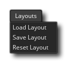

Dieses Menü bezieht sich auf das Speichern und Laden verschiedener IDE-Layouts. Sie können die IDE wie gewünscht einrichten, wobei bestimmte Elemente (wie der Ressourcenbaum oder das Ausgabefenster) anders als im Standard angeordnet sind. Damit können Sie GameMaker Studio 2 an Ihren Workflow anpassen und mit den Optionen in diesem Menü können Sie die aktuellen Projektlayouts als speichern *.xml Datei, die dann in ein beliebiges Projekt geladen werden kann, um die Layouts gleich zu setzen. Die Optionen in diesem Menü sind wie folgt:
- Layout laden - Dies öffnet einen Datei-Explorer, in dem Sie ein zuvor gespeichertes Layout auswählen können *.xml Datei zum Laden.
- Layout speichern - Dies öffnet einen Datei-Explorer, in dem Sie das aktuelle IDE-Layout benennen und speichern können *.xml Datei.
- Layout zurücksetzen - Dadurch wird das aktuelle IDE-Layout auf die Standardeinstellungen zurückgesetzt.